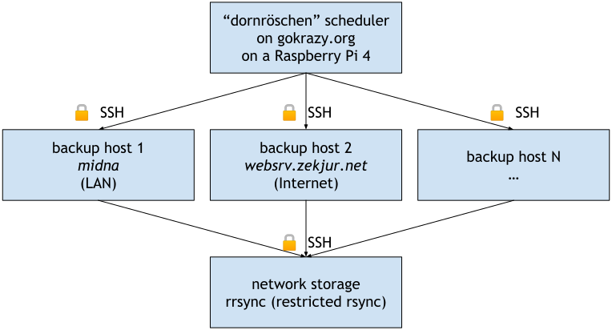

Table of contents
This post is the first article in a series of blog posts about rsync, see the Series Overview.
To motivate why it makes sense to look at rsync, I present three scenarios for which I have come to appreciate rsync: DokuWiki transfers, Software deployment and Backups.
Scenario: DokuWiki transfers using rsync
Recently, I set up a couple of tools for a website that is built on DokuWiki, such as a dead link checker and a statistics program. To avoid overloading the live website (and possibly causing spurious requests that interfere with statistics), I decided it would be best to run a separate copy of the DokuWiki installation locally. This requires synchronizing:
- The PHP source code files of DokuWiki itself (including plugins and configuration)
- One text file per wiki page, and all uploaded media files
A DokuWiki installation is exactly the kind of file tree that scp(1)
cannot efficiently transfer (too many small files),
but rsync(1)
can! The rsync transfer only takes a few seconds, no matter if
it’s a full download (can be simpler for batch jobs) or an incremental
synchronization (more efficient for regular synchronizations like backups).
Scenario: Software deployment using rsync
For smaller projects where I don’t publish new versions through Docker, I instead use a shell script to transfer and run my software on the server.
rsync is a great fit here, as it transfers many small files (static assets and
templates) efficiently, only transfers the binaries that actually changed, and
doesn’t mind if the binary file it’s uploading is currently running (contrary to
scp(1)
, for example).
To illustrate how such a script could look like, here’s my push script for Debian Code Search:
#!/bin/zsh
set -ex
# Asynchronously transfer assets while compiling:
(
ssh root@dcs 'for i in $(seq 0 5); do mkdir -p /srv/dcs/shard${i}/{src,idx}; done'
ssh root@dcs "adduser --disabled-password --gecos 'Debian Code Search' dcs || true"
rsync -r systemd/ root@dcs:/etc/systemd/system/ &
rsync -r cmd/dcs-web/templates/ root@dcs:/srv/dcs/templates/ &
rsync -r static/ root@dcs:/srv/dcs/static/ &
wait
) &
# Compile a new Debian Code Search version:
tmp=$(mktemp -d)
mkdir $tmp/bin
GOBIN=$tmp/bin \
GOAMD64=v3 \
go install \
-ldflags '-X github.com/Debian/dcs/cmd/dcs-web/common.Version=$version' \
github.com/Debian/dcs/cmd/...
# Transfer the Debian Code Search binaries:
rsync \
$tmp/bin/dcs-{web,source-backend,package-importer,compute-ranking,feeder} \
$tmp/bin/dcs \
root@dcs:/srv/dcs/bin/
# Wait for the asynchronous asset transfer to complete:
wait
# Restart Debian Code Search on the server:
UNITS=(dcs-package-importer.service dcs-source-backend.service dcs-compute-ranking.timer dcs-web.service)
ssh root@dcs systemctl daemon-reload \&\& \
systemctl enable ${UNITS} \; \
systemctl reset-failed ${UNITS} \; \
systemctl restart ${UNITS} \; \
systemctl reload nginx
rm -rf "${tmp?}"
Scenario: Backups using rsync
The first backup system I used was bacula, which Wikipedia describes as an enterprise-level backup system. That certainly matches my impression, both in positive and negative ways: while bacula is very powerful, some seemingly common operations turn out quite complicated in bacula. Restoring a single file or directory tree from a backup was always more effort than I thought reasonable. For some reason, I often had to restore backup catalogs before I was able to access the backup contents (I don’t remember the exact details).
When moving apartment last time, I used the opportunity to change my backup
strategy. Instead of using complicated custom software with its own volume file
format (like bacula), I wanted backed-up files to be usable on the file system
level with standard tools like rm, ls, cp, etc.
Working with files in a regular file system makes day-to-day usage easier, and also ensures that when my network storage hardware dies, I can just plug the hard disk into any PC, boot a Linux live system, and recover my data.
To back up machines onto my network storage PC’s file system, I ended up with a hand-written rsync wrapper script that copies the full file system of each machine into dated directory trees:
storage2# ls -l backup/midna/2022-05-27
bin boot etc home lib lib64 media opt
proc root run sbin sys tmp usr var
storage2# ls -l backup/midna/2022-05-27/home/michael/configfiles/zshrc
-rw-r--r--. 7 1000 1000 14554 May 9 19:37 backup/midna/2022-05-27/home/michael/configfiles/zshrc
To revert my ~/.zshrc to an older version, I can scp(1)
the file:
midna% scp storage2:/srv/backup/midna/2022-05-27/home/michael/configfiles/zshrc ~/configfiles/zshrc
To compare a whole older source tree, I can mount it using sshfs(1)
:
midna% mkdir /tmp/2022-05-27-i3
midna% sshfs storage2:/srv/backup/midna/2022-05-27/$HOME/i3 /tmp/2022-05-27-i3
midna% diff -ur /tmp/2022-05-27-i3 ~/i3/
Incremental backups
Of course, the idea is not to transfer the full machine contents every day, as
that would quickly fill up my network storage’s 16 TB disk! Instead, we can use
rsync’s --link-dest option to elegantly deduplicate files using file system
hard links:
backup/midna/2022-05-26
backup/midna/2022-05-27 # rsync --link-dest=2022-05-26
To check the de-duplication level, we can use du(1)
,
first on a single directory:
storage2# du -hs 2022-05-27
113G 2022-05-27
…and then on two subsequent directories:
storage2# du -hs 2022-05-25 2022-05-27
112G 2022-05-25
7.3G 2022-05-27
As you can see, the 2022-05-27 backup took 7.3 GB of disk space, and 104.7 GB were re-used from the previous backup(s).
To print all files which have changed since the last backup, we can use:
storage2# find 2022-05-27 -type f -links 1 -print
Limitation: file system compatibility
A significant limitation of backups at the file level is that the destination file system (network storage) needs to support all the file system features used on the machines you are backing up.
For example, if you use POSIX
ACLs or Extended
attributes
(possibly for Capabilities or
SELinux), you need to ensure that
your backup file system has these features enabled, and that you are using rsync(1)
’s --xattrs (or -X for short) option.
This can turn from a pitfall into a dealbreaker as soon as multiple operating
systems are involved. For example, the rsync version on macOS has
Apple-specific
code
to work with Apple resource forks
and other extended attributes. It’s not clear to me whether macOS rsync can
send files to Linux rsync, restore them, and end up with the same system state.
Luckily, I am only interested in backing up Linux systems, or merely home directories of non-Linux systems, where no extended attributes are used.
Downside: slow bulk operations (disk usage, deletion)
The biggest downside of this architecture is that working with the directory
trees in bulk can be very slow, especially when using a hard disk instead of an
SSD. For example, deleting old backups can easily take many hours to multiple
days (!). Sure, you can just let the rm command run in the background, but
it’s annoying nevertheless.
Even merely calculating the disk space usage of each directory tree is a painfully slow operation. I tried using stateful disk usage tools like duc, but it didn’t work reliably on my backups.
In practice, I found that for tracking down large files, using ncdu(1)
on any recent backup typically quickly shows the
large file. In one case, I found var/lib/postgresql to consume many
gigabytes. I excluded it in favor of using pg_dump(1)
, which resulted in much smaller backups!
Unfortunately, even when using an SSD, determining which files take up most space of a full backup takes a few minutes:
storage2# time du -hs backup/midna/2022-06-09
742G backup/midna/2022-06-09
real 8m0.202s
user 0m11.651s
sys 2m0.731s
Backup transport (SSH) and scheduling
To transfer data via rsync from the backup host to my network storage, I’m
using SSH.
Each machine’s SSH access is restricted in my network storage’s SSH authorized_keys(5)
config file to not allow arbitrary
commands, but to perform just a specific operation. The only allowed operation
in my case is running rrsync (“restricted rsync”) in a container whose file
system only contains the backup host’s sub directory, e.g. .websrv.zekjur.net:
command="/bin/docker run --log-driver none -i -e SSH_ORIGINAL_COMMAND -v /srv/backup/websrv.zekjur.net:/srv/backup/websrv.zekjur.net stapelberg/docker-rsync /srv/backup/websrv.zekjur.net",no-port-forwarding,no-X11-forwarding ssh-ed25519 AAAAC3…
(The corresponding Dockerfile can be found in my Gigabit NAS
article.)
To trigger such an SSH-protected rsync transfer remotely, I’m using a small
custom scheduling program called
dornröschen. The
program arranges for all involved machines to be powered on (using
Wake-on-LAN) and then starts
rsync via another operation-restricted SSH connection.
You could easily replace this with a cron job if you don’t care about WOL.
The architecture looks like this:

The operation-restricted SSH connection on each backup host is configured in
SSH’s authorized_keys(5)
config file:
command="/root/backup-remote.pl",no-port-forwarding,no-X11-forwarding ssh-ed25519 AAAAC3…
Next up
The second article in this series is rsync, article 2: Surroundings. Now that we know what to use rsync for, how can we best integrate rsync into monitoring and alerting, and on which operating systems does it work?